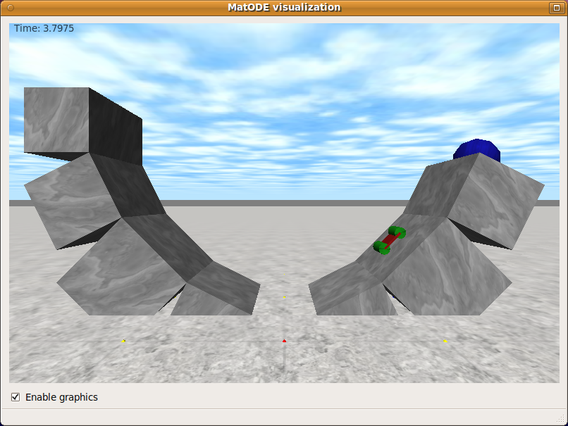

|
||||||||||
|
MatODE
MatODE is a Matlab interface to the Open Dynamics Engine (ODE) by Russell Smith. From the ODE website: ODE is an open source, high performance library for simulating rigid body dynamics. It is fully featured, stable, mature and platform independent with an easy to use C/C++ API. It has advanced joint types and integrated collision detection with friction. ODE is useful for simulating vehicles, objects in virtual reality environments and virtual creatures. It is currently used in many computer games, 3D authoring tools and simulation tools.MatODE uses Matlab's oriented programming capabilities to make the interface as easy as possible. The main class is odesim, which provides global interaction with the simulator such as initialization, running a simulation step, and resetting to an initial condition. It also allows you to retrieve sensor and actuator indices, with which you can sense joint positions and drive motors. The bodies that constitute the robot and the joints that connect them are defined in an XML file loaded during initialization. Example
%% Initialization
sim = odesim('mountaincar.xml'); % Load configuration
sim.realtime(); % Slow down to realtime
%% Define sensors and actuators
vel = sim.sensor('robot.base.velocity.y'); % Define sensor
motor = sim.actuator('robot.motorjoint1.torque'); % Define actuator
actuators = sim.actuate(); % Get actuation vector
%% Control loop
for t = 0:sim.step():6 % Simulation loop (6s)
sensors = sim.sense(); % Measure sensor values
if sensors(vel) > 0 % Read sensor
actuators(motor) = 0.5; % Set actuator
else
actuators(motor) = -0.5;
end
sim.actuate(actuators); % Run simulation step
end
%% Clean up
sim.close() % Destroy simulation
Screenshot  Downloads matode 0.1, for Linux and Windows (32-bit) Authors MatODE was written by Wouter Caarls and Erik Schuitema. It uses muParser, ODE, Pthreads-w32, Qt and TinyXML. It is released under the GPL license, version 2. For source code, please contact the authors. |
|||||||||
 |
||||||||||